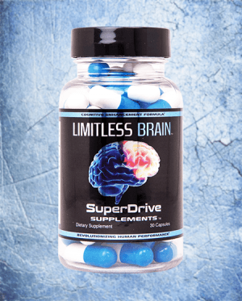
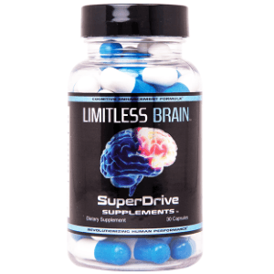
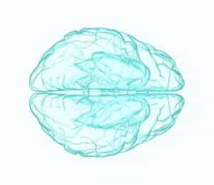
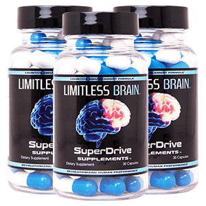

Sponsored Article is ROK's official account that publishes sponsored articles from advertisers. If you are interested hiring a sponsored article for your site, product, or service, visit our advertising page.


The following article was sponsored by SuperDrive Supplements
Many guys that read Return of Kings are no strangers to performance enhancement.
Whether it involves using compounds that help build muscle faster, improve sexual prowess, or decrease approach anxiety… most red pill men are comfortable ‘cheating’ and using whatever legal edge they can find to get the most out of life.
Let’s face it- It’s tough out there. If you want to kick ass and make bank in today’s crazy world you need to set yourself apart by getting a huge amount of work done in the limited time you have.
For that exact reason, a class of supplements called nootropics have seen a huge surge in popularity over the past few years.
Young guys and older guys alike are using nootropics to maximize their productivity and get ahead in super-competitive industries and also build their own successful businesses.

Nootropics are the real deal and today we are going to tell you how they can help you make your biggest goals easier to achieve.
Nootropics are a type of supplement that work by enhancing the human brain. The name ‘Nootropics’ was coined in 1972 by Dr. Cornelius Girugea. He picked this name by combining two Latin words that essentially translate to ‘change the mind’s shape’.
Nootropics don’t actually change the shape of any part of the brain, but they do have powerful effects on the key neurotransmitters and neurons that are responsible for our focus, energy levels, concentration, motivation, memory, learning ability, social skills, & much more.
Unlike prescription drugs, as we’ll discuss later, nootropics are not addictive and are generally very safe and well tolerated.
What Are The Benefits Of Nootropics? Do They Actually Work?
With most supplements today, the actual noticeable effects are negligible. When was the last time you flexed in front of the mirror and said ‘wow, all that glutamine turned me into a beast’?
The reality is that MOST supplements provide a very trivial benefit that you will realistically never notice.
Nootropics are in the small minority of supplements that are legit and can provide a very noticeable improvement in your mental performance.
For most users, the effects include a moderate to drastic increase in: focus, motivation, energy, alertness, concentration, mood, memory recall, and learning ability.
When using a high quality nootropic formula, the effects can be felt within 15 minutes and last for several hours. The most common benefits experienced are energy, focus, and motivation.
While nootropics are generally thought of as ‘smart drugs’, several users have also reported that they experience a significant boost in social confidence and mood when taking them. The science backs this up, since nootropics act upon the same neural networks that control these aspects of human behavior.
Nootropics are used by a fairly wide range of individuals. The most common are business owners, professionals, students, athletes, internet entrepreneurs, and professional gamers/gamblers.
Whatever your goals are, nootropics can likely help you. They’ve been well documented over the years to provide the benefits that are required to be successful in high pressure pursuits.
For the readers of ROK, using a high quality nootropic can help you build your own business and live life on your own terms. A lot of guys have also found them to be good for increasing energy and sociability, which makes it easier to go out and game hot girls.
As nootropics are classified as dietary supplements, they’ve been the subject of years of rigorous studies and tests. Not only have they been found to be highly effective, but they’ve also been shown to be safe for human use.
A comparison is sometimes made between nootropics and prescription drugs like Adderall. Since high quality nootropics are powerful and actually work, we can understand why the two classes of compounds are often compared.
In reality, there are major differences between nootropics and prescription drugs. Adderall and similar compounds are much harsher on the body, tend to be highly addictive, and can have nasty side effects.
Nootropics are more relaxed and provide a consistent, highly effective stream of focus and energy. There is no crash, side effects, or feeling too wired up to get any work done.

Nootropics can be straight forward to use or they can be a nightmare. Upon first discovering them, most users are overwhelmed by how many different types of nootropics ingredients exist out there. The reality is that some nootropic ingredients are excellent and others are just mediocre.
Making matters more complicated, there are many ‘synergies’ between various nootropics that only seasoned users know about. These advanced combinations, often known as formulas, are one of the biggest reasons why nootropics are the real deal.
Nootropics combine well together to create incredible cognitive benefits for the user, but the key is knowing which ingredients to combine.

This is a common newbie question and it leads to a common newbie mistake. A lot of newcomers to nootropics end up buying a ton of random nootropic powders and mixing and matching them. This often costs hundreds of dollars and can take weeks before a good combination is found. It is also super annoying to measure out tiny amounts of ingredients and keep track of what you’re taking.
A much smarter, faster, and more cost effective way to get the most out of nootropics is to buy a high quality premade formula.
You want to get a nootropic formula that contains the most effective ingredients that synergize well together.
You will save a ton of money and experience the best benefits of nootropics right away instead of multiple days/weeks/months down the road.

We’ve been using nootropics for a long time. Long enough to know what works, what doesn’t, and how to get the best bang for you buck with this incredible class of supplements.
We’ve spent a ton of money trying out different ingredients and combining them until we finally created our own custom formulation. We used it for a while and had a ton of success with it… and then we decided to make it available to the public.
It was a great decision, and we’re happy to tell you about it today.
Our premium formula is called LIMITLESS BRAIN, and it contains the 8 most powerful & synergized nootropic compounds.
It’s made in the United States, in an FDA registered fully compliant facility.
It’s safe, it’s cheaper than your daily coffee habit, and most importantly- It actually works.
If you’re worried about being a ‘cheater’ – Who really cares. Give yourself an enormous advantage now with nootropics. The guys at the top already are.
Nootropics are the future of human performance enhancement, and LIMITLESS BRAIN is the gold standard.
Click here to learn more about LIMITLESS BRAIN and try it for yourself today